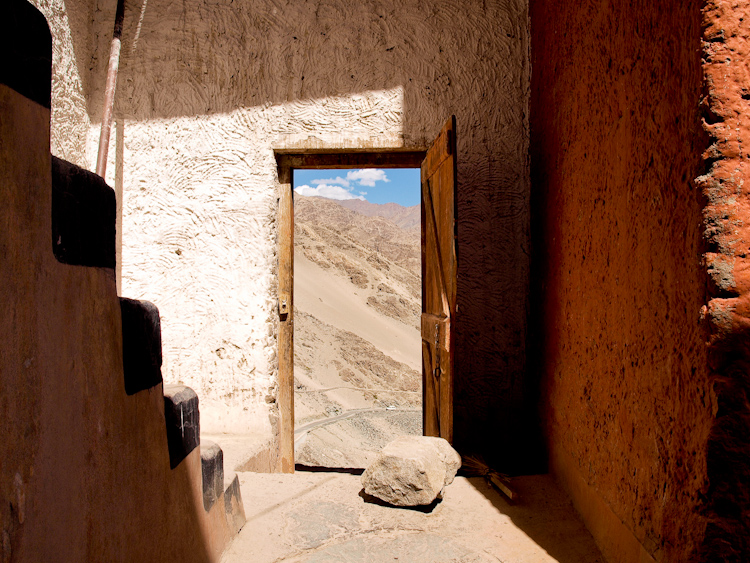

-
LADAKH
Tibetans drink tea under an idealised painting of Lhasa, the capital of Tibet. Dharamshala, India.
Fog creeps through the forest in the Himachal.
A printing block used to print prayer flags. Prayer flags contain images of gods and holy scriptures, and flutter in the mountain breeze, infecting the air with good karma.
Road workers on the road to Ladakh take a break. Working at extreme altitudes in dry, cold and unforgiving terrain, these workers struggle to keep the sole southern access to Ladakh open in the summer. In winter, the wrath of the mountain descends, and obliterates their work.
Road workers on the road to Ladakh repair a glacier-damaged bridge.
Abandoned shelter on the road to Ladakh.
Moonrise at 4000m above sea level. The shadow of the mountains behind retreats as the moon rises, lighting up the mountains in front. A lone lorry passing the highway leaves a trail of lights.

A door in the wall of Thiksey Monastery, Ladakh, opens out into the bleak mountainscape.
An Ekajati, or Blue Tara. Mural, Thiksey Monastery.

A monk crosses the courtyard of Thiksey Monastery. In the distance, the narrow green belt of the Indus is the only interruption on the hard brown desertscape of the Ladakh Valley.
Thiksey Monastery.
A monk’s essentials: prayer beads, a prayer book, and cymbals.
The Indus cuts a green swath through the desert of Ladakh.
The Eastern Himalayas, Ladakh.